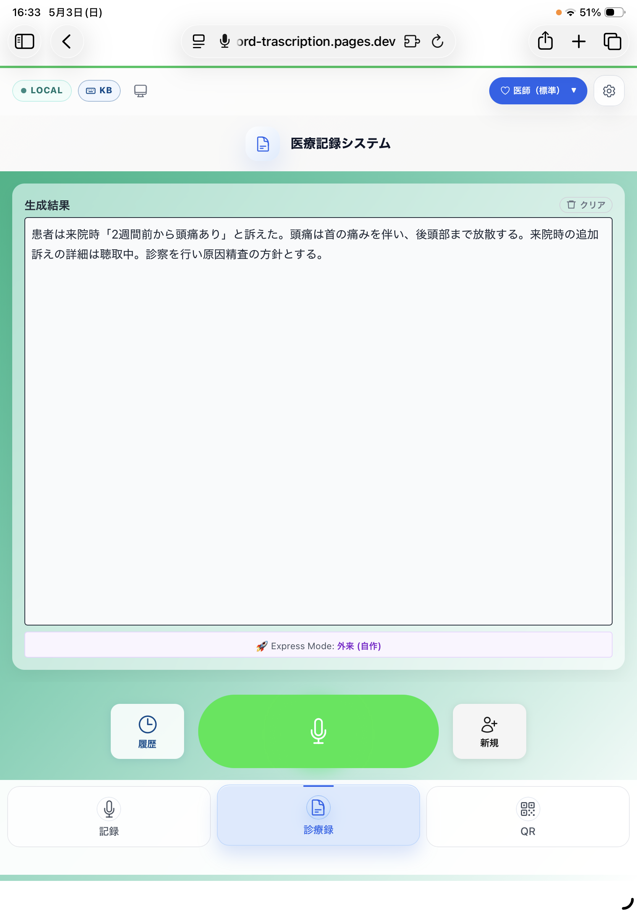
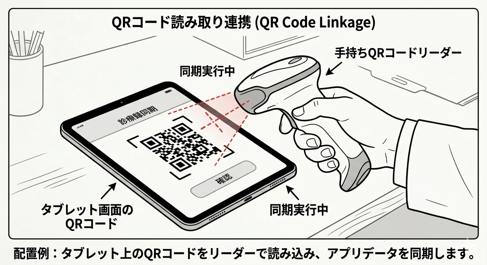
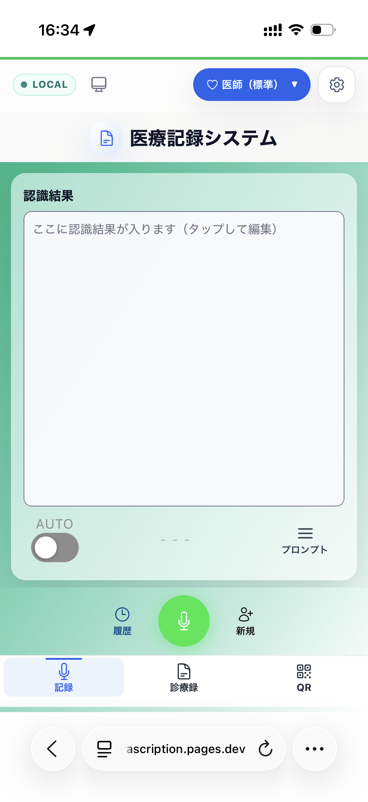

1件5〜15分の手入力が診療後に積み重なる。外来が終わっても仕事は終わらない。
音声→メモ→入力の多段階で発生する転記エラー。記憶の劣化と入力ミスが医療品質を脅かす。
記録を書いてから、また入力する二重作業。同じ情報を何度も打ち直す非効率な日常。
録音停止から約10秒で診療録を自動生成。QRコードで電子カルテに即連携。
録音ボタンを押して話すだけ。診療中にリアルタイムで文字起こし。iPad + 外付けキーボードなら、たった2つのキーで全操作が手元で完結します。

話した内容をAIが要約・整理。前回の記録を複製して変化点だけ追記する、必要な情報だけ抜き出す、毎回SOAPで書き起こす——どの運用もプロンプト次第で対応。決まった形式を押し付けず、あなたのクリニックのやり方に合わせられます。
生成された診療録を即座にQRコード化。スキャンで入力完了。長文は自動分割に対応。メーカー問わず、QRコードリーダー対応の電子カルテに連携可能です。
※ 電子カルテ側にQRコードリーダーが必要です。

AIによる高精度文字起こし。医療用語も正確に認識。
電子カルテへワンスキャンで入力完了。手入力ゼロ。
医師・看護師・栄養士・受付に最適化されたAIテンプレート。
長時間の患者説明も録音・記録可能。オレンジUIで視覚的に区別。
iPad + 外付けキーボードで、画面に触れずに録音〜QR表示まで手元で完結。衛生面への配慮も万全。
メンバー招待・権限管理・クリニックブランディング。クリニック最大6名。
汎用ツールや既存の医療専用ツールとは、できることが根本的に異なります。
| 比較項目 | 汎用ツール | K-Labo |
|---|---|---|
| 医療用語認識 | 低精度 | ✅ 高精度 |
| 診療録形式出力 | ❌ | ✅ SOAP形式等 |
| 電子カルテ連携 | ❌ | ✅ QRコード即時 |
| 職種対応 | ❌ | ✅ 4職種 |
| 比較項目 | 医療専用ツール | K-Labo |
|---|---|---|
| 初期コスト | 数十万円〜 | ✅ ¥0（無料トライアル） |
| 導入期間 | 数週間〜 | ✅ 即日 |
| 出力 | 文字起こしのみ | ✅ AI診療録生成まで |
| 機器 | 専用ハード必要 | ✅ ブラウザのみ |

追加のアプリ不要。ブラウザだけで動作します。
※ 電子カルテとのQRコード連携は、Windowsでの実績があります。Macの電子カルテは現時点で非対応です（順次対応予定）。
7日間の無料トライアルで、まずはお試しください。トライアルはクレジットカード不要。継続利用にはクレジットカードが必要です。
まずはお試し
トライアル中はクレジットカード不要
早期導入者限定・2年間特別価格
税込 · 2年間の特別価格
support@klabo.work までご連絡ください
クリニック向け（最大6名・医師最大2名）
税込
support@klabo.work までご連絡ください
病院全体向け（最大20名）
料金はお問い合わせください
support@klabo.work までご連絡ください
全プラン共通: AI診療録生成 / 高精度音声認識 / QRコード生成 / 5職種対応 / 自動アップデート
※ 月額費用とは別に初期導入費用がかかります。詳細は support@klabo.work までお問い合わせください。
※ 初期導入セットアップ（機器設定・スタッフ研修・プロンプト調整）のサポートはご相談ください。
※ 電子カルテとのQRコード連携には、電子カルテ側にQRコードリーダーが必要です。Windowsでの実績あり。Macの電子カルテは現時点で非対応。
※ QRコードリーダーはキーボードと同じHIDデバイスとして認識されるため、USBメモリが制限されている医療機関でも使用できます。
全通信を暗号化。傍受・改ざんを防止。
企業グレードの認証基盤。安全なID管理。
患者個人情報はログから除外。PHI保護ポリシー準拠。
役割ベースの5段階アクセス制御。最小権限の原則。
PCI DSS準拠の決済処理。カード情報は当社サーバーに保存しない。
全操作ログを記録。監査対応・インシデント追跡。